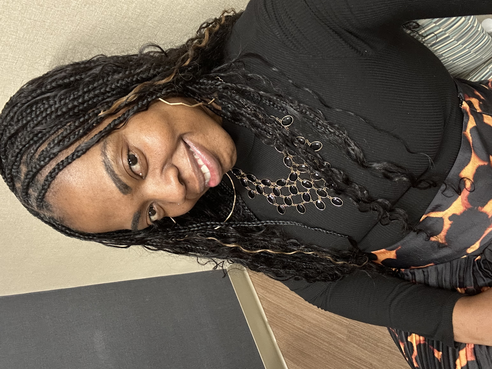

Lindsay Jenkins founded Speak with Strength based on the challenges her son Jonathan faced as he entered college and struggled with public speaking and interviews. As a dedicated math educator for over 20 years, Lindsay has witnessed how students especially in middle and high school struggle with confidence in speaking publicly. Originally from Sumter, South Carolina, Lindsay is passionate about helping others grow. She loves technology, travel, and meeting new people, and hopes to pass this nonprofit on to her son Johnathan one day.
